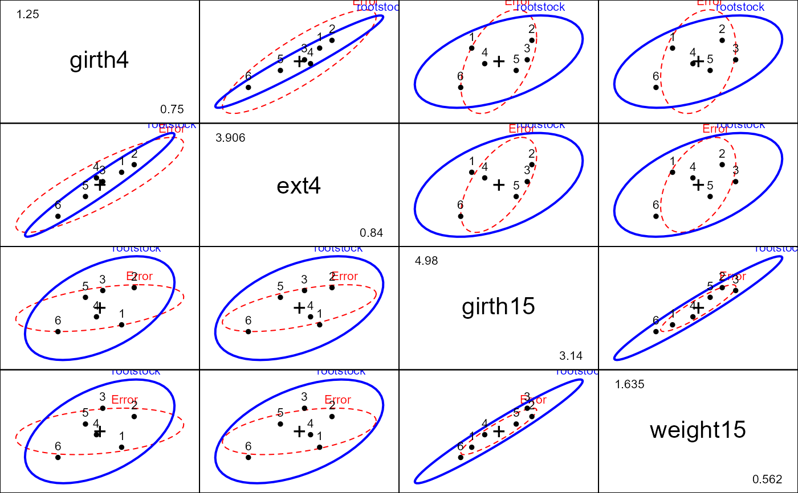

In a classic experiment carried out from 1918 to 1934, growth of apple trees of six different rootstocks were compared on four measures of size. How do the measures of size vary with the type of rootstock?
Format
A data frame with 48 observations on the following 5 variables.
rootstocka factor with levels
123456girth4a numeric vector: trunk girth at 4 years (mm x 100)
ext4a numeric vector: extension growth at 4 years (m)
girth15a numeric vector: trunk girth at 15 years (mm x 100)
weight15a numeric vector: weight of tree above ground at 15 years (lb x 1000)
Source
Andrews, D. and Herzberg, A. (1985). Data: A Collection of Problems from Many Fields for the Student and Research Worker Springer-Verlag, pp. 357–360.
Examples
library(car)
data(RootStock)
str(RootStock)
#> 'data.frame': 48 obs. of 5 variables:
#> $ rootstock: Factor w/ 6 levels "1","2","3","4",..: 1 1 1 1 1 1 1 1 2 2 ...
#> $ girth4 : num 1.11 1.19 1.09 1.25 1.11 1.08 1.11 1.16 1.05 1.17 ...
#> $ ext4 : num 2.57 2.93 2.87 3.84 3.03 ...
#> $ girth15 : num 3.58 3.75 3.93 3.94 3.6 3.51 3.98 3.62 4.09 4.06 ...
#> $ weight15 : num 0.76 0.821 0.928 1.009 0.766 ...
root.mod <- lm(cbind(girth4, ext4, girth15, weight15) ~ rootstock, data=RootStock)
car::Anova(root.mod)
#>
#> Type II MANOVA Tests: Pillai test statistic
#> Df test stat approx F num Df den Df Pr(>F)
#> rootstock 5 1.3055 4.0697 20 168 1.983e-07 ***
#> ---
#> Signif. codes: 0 '***' 0.001 '**' 0.01 '*' 0.05 '.' 0.1 ' ' 1
pairs(root.mod)

# test two orthogonal contrasts among the rootstocks
hyp <- matrix(c(2,-1,-1,-1,-1,2,
1, 0,0,0,0,-1), 2, 6, byrow=TRUE)
car::linearHypothesis(root.mod, hyp)
#>
#> Sum of squares and products for the hypothesis:
#> girth4 ext4 girth15 weight15
#> girth4 2.684223 7.573365 7.792122 1.617892
#> ext4 7.573365 22.489458 23.293194 5.760003
#> girth15 7.792122 23.293194 24.145778 6.090615
#> weight15 1.617892 5.760003 6.090615 2.248755
#>
#> Sum of squares and products for error:
#> girth4 ext4 girth15 weight15
#> girth4 0.3199875 1.696564 0.5540875 0.217140
#> ext4 1.6965637 12.142790 4.3636125 2.110214
#> girth15 0.5540875 4.363612 4.2908125 2.481656
#> weight15 0.2171400 2.110214 2.4816562 1.722525
#>
#> Multivariate Tests:
#> Df test stat approx F num Df den Df Pr(>F)
#> Pillai 2 1.426293 24.86102 8 80 < 2.22e-16 ***
#> Wilks 2 0.020401 58.51245 8 78 < 2.22e-16 ***
#> Hotelling-Lawley 2 26.121884 124.07895 8 76 < 2.22e-16 ***
#> Roy 2 25.254884 252.54884 4 40 < 2.22e-16 ***
#> ---
#> Signif. codes: 0 '***' 0.001 '**' 0.01 '*' 0.05 '.' 0.1 ' ' 1
heplot(root.mod, hypotheses=list(Contrasts=hyp, C1=hyp[1,], C2=hyp[2,]))
 heplot1d(root.mod, hypotheses=list(Contrasts=hyp, C1=hyp[1,], C2=hyp[2,]))
heplot1d(root.mod, hypotheses=list(Contrasts=hyp, C1=hyp[1,], C2=hyp[2,]))